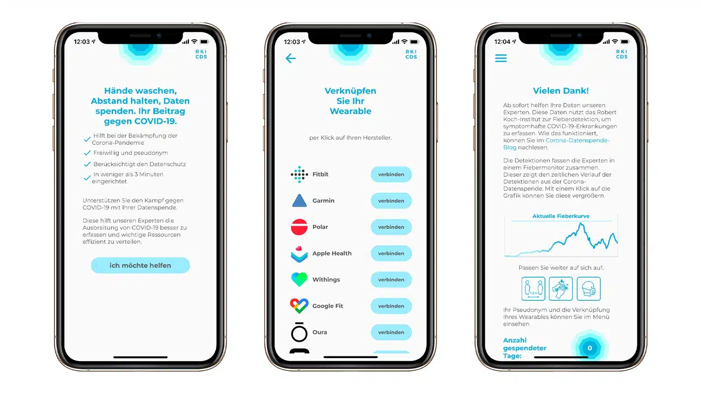

One API for the messy world of wearable health data.
As Product Owner at Thryve, I helped scale a regulated health data platform from a small startup into infrastructure used by more than one million people across digital health, research, insurance, and public health.
The problem
Health data was everywhere, but useful access was nowhere.
Every health tech company I talked to had the same problem. They wanted to build products around wearable data, but every device had its own rules. Fitbit had one API. Garmin had another. Apple Health behaved differently depending on the iOS version. Oura, Withings, Samsung Health, Omron, each integration became its own mini-product.
I watched one customer spend four months connecting to a single device before they could even start building their actual product. Most health products needed five or six sources, not one. That meant teams were spending their best engineering time on plumbing instead of patient outcomes, research questions, or behavior change.
The product challenge was not just connecting devices. It was turning fragmented, noisy, sensitive health data into something developers could trust, and users could consent to safely.
Platform case study
The unified health data API.
We built one API that talked to hundreds of wearables and health apps. A developer could integrate once, then access normalized health data across Fitbit, Garmin, Apple Health, Withings, Oura, Samsung Health, Omron, and more.
I owned roadmap prioritization and worked with engineering to standardize the chaos behind the scenes. Heart rate from a Fitbit does not arrive like heart rate from an Apple Watch. Sleep, activity, workouts, and device metadata all required product decisions about consistency, edge cases, missing data, consent, and developer experience.
The best feedback I heard was simple: “You saved us six months.” That is what good infrastructure does. It disappears so someone else can build.
- Scaled API and SDK usage to 1M+ users across 100+ health industry customers.
- Led 10+ wearable integrations, including Oura, Whoop, Omron, Samsung Health, and Apple Health.
- Helped grow the company from €0 to €1M ARR and from 7 to 35 people.

Public health case study
When product work became a pandemic response.
In March 2020, COVID-19 had just hit Germany. We were still a small startup, but we had a question nobody had answered yet: could smartwatch data help detect population-level fever signals before the official numbers caught up?
We pitched the idea to the Robert Koch-Institute, Germany’s public health institute, then moved fast. Four weeks from concept to launch. Mobile app, data pipelines, privacy infrastructure, GDPR-compliant consent, and a public-facing story clear enough for hundreds of thousands of people to understand why donating their health data mattered.
On launch day, 300,000 people signed up in the first 24 hours. Over one million eventually registered, with 500,000 active data donors. The algorithms detected Germany’s second wave two weeks before official case numbers did.
- Launched Germany’s first Corona-App for RKI in four weeks.
- Reached 1M+ registrations and 500K+ active data donors.
- Supported early detection of Germany’s second wave two weeks before official case numbers.
How I worked
The job was part product, part operations, part translation layer.
Thryve taught me how to be useful when the company is small and the product surface is wide. I moved between customer calls, sprint planning, QA, partner integration scoping, release coordination, and internal process design.
I worked closely with C-level, frontend, backend, QA, and customer teams to plan, execute, and review releases. The work was technical, but the core PM job was human: make the problem legible, make the tradeoff explicit, and keep the team moving without losing sight of the end user.
That period shaped how I still work now. Listen deeply, find the system underneath the complaint, and build infrastructure that lets other teams move faster.
“Matthew scaled a complex IT service in a highly regulated field of healthcare from 1k end users to over 1 million.”Paul Burggraf, Founder at Thryve
Next case study